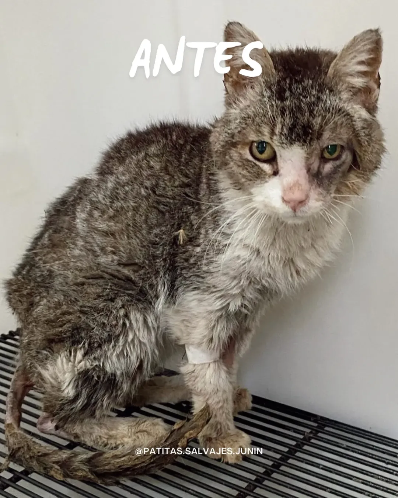
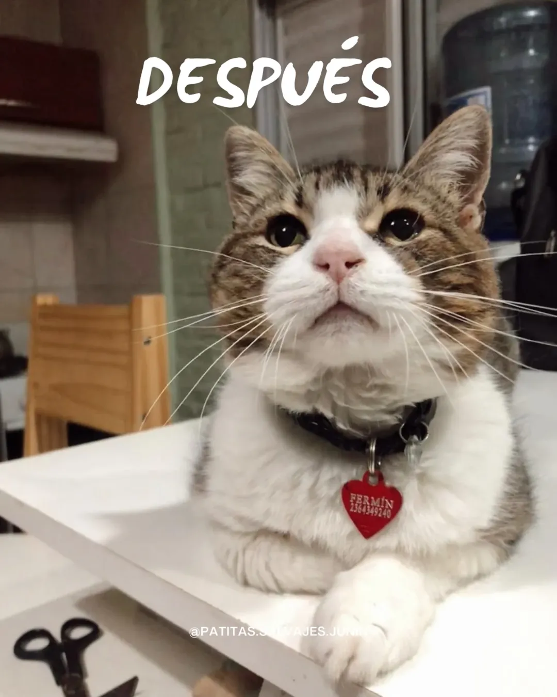
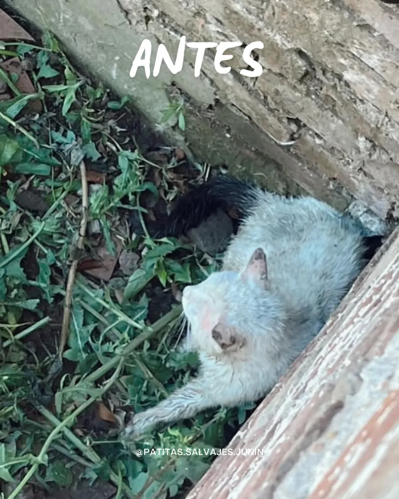
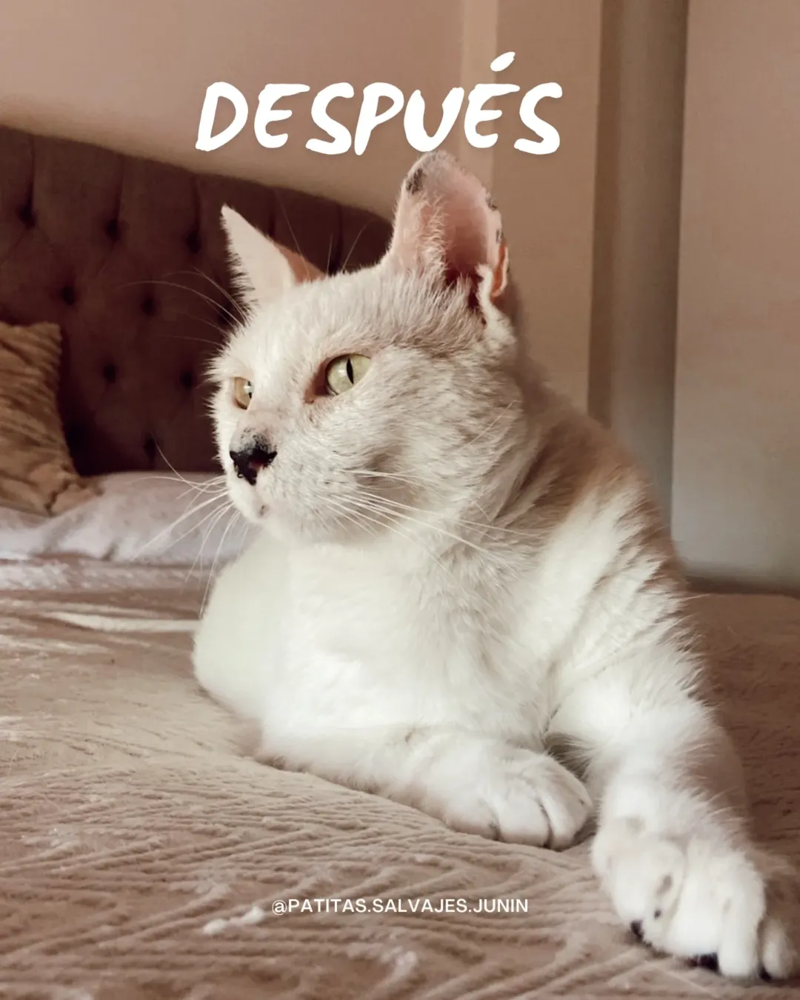
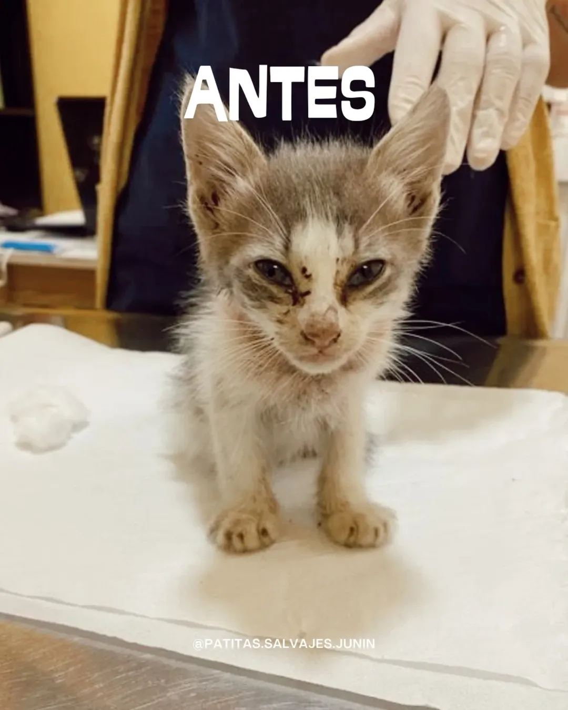
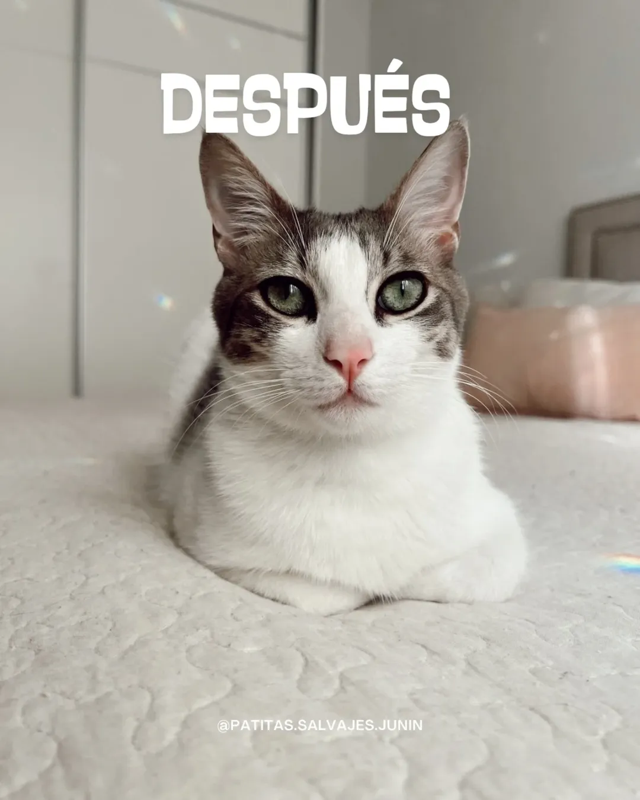

🛋️ De la calle al sillón
Conocé algunas de las historias que más nos emocionaron. Estas transformaciones son posibles gracias a vos 💖


Fermín
Fue encontrado en una caja, herido y sin fuerzas. Hoy duerme en sillones, rodeado de amor, con su familia adoptiva y sus nuevos hermanitos 💖🏠
💗 Ver su historia completa


Nilo
Pasó de estar acorralado por perros y lleno de miedo… a dormir en paz, rodeado de amor. Hoy es un gato feliz, seguro y amado 🐈⬛🏡💘
💗 Ver su historia completa


Rodri
Fue rescatado en estado crítico y pasó semanas en incubadora. Hoy es un michi travieso que disfruta la vida desde su sillón, rodeado de amor y cuidados 🛋️💘
💗 Ver su historia completa